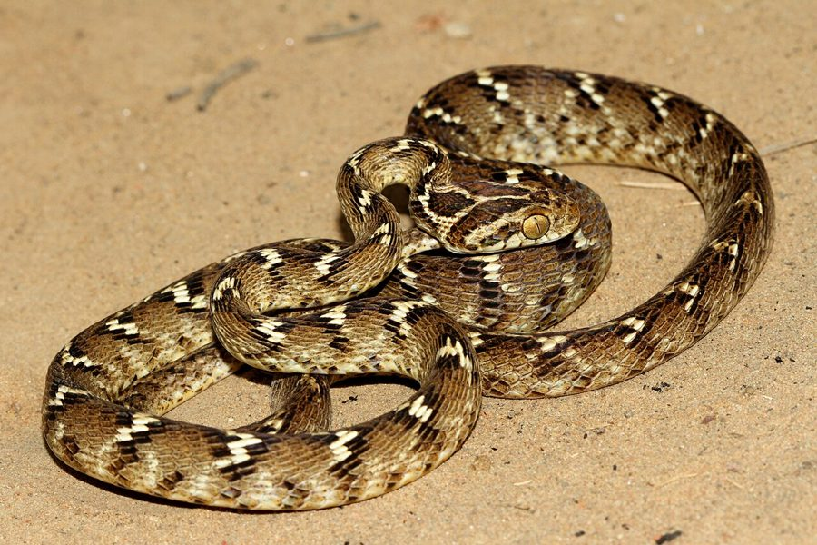

कैट स्नेकCommon Cat Snake
Boiga trigonata · Colubridae · REP-0029

- Scientific nameवैज्ञानिक नाम
- Boiga trigonata (Schneider, 1801)
- Familyकुल
- Colubridae
- Hindiहिंदी
- कैट स्नेक
- Local namesस्थानीय नाम
- cat snake, common cat snake, kat snake, saamp
- Status hereयहाँ की स्थिति
- native
- Movementआवागमन
- Resident, here all year
- IUCNIUCN
- LC
- Reviewसमीक्षा
- audited and independently read
When to look कब देखें
Expected mainly in March, April, May, June, July, August, September, October, November.मुख्यतः मार्च, अप्रैल, मई, जून, जुलाई, अगस्त, सितंबर, अक्टूबर, नवंबर में अपेक्षित।
Tell it apart from इनसे अलग पहचानें
कैट स्नेक / Common Cat Snake
Boiga trigonata (Schneider, 1801) — Colubridae
कैट स्नेक (कॉमन कैट स्नेक) — बस्ती के जंगलों, बागों और पुरानी इमारतों में रात के समय रहने वाला एक पतला, लचकदार सांप। इसके नाम 'cat' का अर्थ उसकी बिल्ली जैसी निशाचर गतिविधि से है। इसका शरीर हल्का भूरा, पीला-भूरा, या कभी हरा होता है, और इसमें गहरी ज़िगज़ैग पट्टियां (zig-zag bands) होती हैं। यह सांप बिल्कुल विषरहित है। इसकी विशेषता यह है कि इसकी पुतलियां (pupils) ऊर्ध्वाधर (vertical) होती हैं, जो इसे रात के अंधेरे में शिकार करने में मदद करती हैं। यह बहुत अच्छा पेड़ों पर चलने वाला सांप है और अन्य सांपों का शिकार करता है, खासकर जब वे सो रहे हों।
Quick Identification त्वरित पहचान
| Feature | Description |
|---|---|
| Form | Slender, graceful, whip-like body; excellent climber |
| Length | 80–120 cm total length |
| Coloration | Light brown, yellowish, or pale green; dark zig-zag bands along body |
| Head | Slightly distinct from neck; snout blunt |
| Eyes | Large, dark; pupils vertically elongated; adapted for nocturnal vision |
| Tail | Long, prehensile; used for gripping branches |
| Body texture | Smooth scales; body slightly compressed laterally |
| Behaviour | Nocturnal, arboreal, ophiophagous; found in trees, buildings; strikes rapidly |
Field tip: A slender, zig-zag banded snake with large eyes and vertical pupils, found in trees or buildings at night. Moves with ease through branches. Completely harmless; feeds on small snakes and lizards.
हिंदी — कैसे पहचानें:
पतला, लचकदार सांप।
ज़िगज़ैग पट्टियां, पीले-भूरे रंग की।
बड़ी आँखें, ऊर्ध्वाधर पुतलियां।
रात को सक्रिय, पेड़ों पर चढ़ता है।
Morphology आकारिकी
Biometrics:
| Measurement | Range |
|---|---|
| Total length | 800–1200 mm |
| Tail length | 250–400 mm |
| Weight | 150–350 g |
Body shape: Slender and graceful, whip-like appearance. Body slightly compressed laterally, making it streamlined for movement through branches. Head slightly distinct from neck; snout blunt. The body tapers gradually to the tail, which is notably longer and prehensile.
Coloration: Highly variable; light brown, yellowish-brown, pale green, or greyish. The body is marked with characteristic dark brown or black zig-zag bands (vertical chevrons) running across the back. Ventral (belly) surface pale yellow or cream. Some individuals may be nearly uniform in coloration with faint bands.
Head markings: Often shows a dark Y-shaped or angular mark on the head, which is useful for identification.
Scales: Smooth, shiny scales arranged in 15–17 rows at midbody. All scales similar in size; no enlarged vertebral or keeled scales.
Eyes: Large and prominent, adapted for nocturnal vision. Pupils are vertically elongated, a key adaptation for low-light hunting. This eye structure is characteristic of nocturnal predatory snakes.
Tail: Long, slender, and prehensile (can grasp branches); used as a climbing aid.
Dentition: Aglyphous (lacks fangs). Teeth small, slightly backward-curved.
Behaviour & Ecology व्यवहार और पारिस्थितिकी
Nocturnal arboreal predator: The Common Cat Snake is strictly nocturnal, hunting exclusively at night. It is one of the most skillful climbers among Indian snakes, moving with ease through dense foliage and branches.
Ophiophagous specialist: Like the Trinket Snake, it feeds primarily on other snakes, particularly sleeping snakes found on branches or in crevices at night. It also feeds on small lizards.
Hunting strategy: Hunts by movement and search, actively foraging through vegetation at night. When prey is found, it strikes rapidly with a powerful bite, often subduing prey quickly.
Arboreal lifestyle: Spends most of its life in trees and shrubs, rarely coming to the ground except to move between trees or to shelter in crevices. Excellent climber with a prehensile tail.
Defensive behaviour: When threatened, the snake may hiss and strike repeatedly. The strike is fast and the bite is repeated; however, the snake is completely harmless to humans (no venom).
Life Cycle / Phenology जीवन चक्र
| Stage / season | Event |
|---|---|
| December–February | Dormant or sluggish; sheltered in tree crevices or buildings |
| March–April | Emergence; activity increases; breeding season begins |
| April–June | Mating; males search for females |
| June–July | Egg-laying; females lay 6–12 elongated eggs in tree cavities, crevices, or buildings |
| July–September | Eggs incubate in warm conditions |
| September–October | Hatchlings emerge; juveniles begin hunting |
| October–November | Continued growth and feeding |
| November–December | Activity declines; preparation for dormancy |
Host Plants or Prey आहार
| Prey Type | Examples |
|---|---|
| Snakes | Smaller colubrid snakes, young kraits, other species |
| Lizards | Geckos, skinks, occasional prey |
हिंदी: मुख्य भोजन: अन्य सांप, खासकर छोटे सांप। कभी-कभी छिपकलियां।
Predators / Natural Enemies शत्रु
- Avian predators: Owls (especially nocturnal hunters), serpent eagles, occasionally other large birds
- Reptilian predators: Larger snakes, monitor lizards
- Mammalian predators: Civets, occasionally wild boar
- Parasites: Mites, ticks, intestinal helminths
हिंदी: उल्लू, सांपों के शिकारी पक्षी, बड़े सांप।
Agricultural / Human Relevance कृषि प्रासंगिकता
Ecological role: Common Cat Snakes help control populations of other snakes, maintaining ecological balance. They may also consume small lizards that could potentially damage crops.
Protected status: Protected under the Wildlife (Protection) Act, 1972 (Schedule IV). Killing or capturing is prohibited.
Building inhabitants: Often found in old buildings, granaries, and temples, where they hunt for snakes and small reptiles. Generally not a pest, though presence in buildings may disturb some people.
Nocturnal ecology: Their nocturnal activity pattern means they are rarely encountered by humans, reducing conflict.
Expected Locally स्थानीय रूप से अपेक्षित
Not a field record. Written from published accounts for eastern Uttar Pradesh. No confirmed local sighting yet — if you have seen it, that is what the atlas needs.
अभी तक स्थानीय पुष्टि नहीं। यह विवरण प्रकाशित स्रोतों से है, किसी अवलोकन से नहीं।
This species is NOT a field record. The distribution below is based on published sources describing where Common Cat Snakes should be looked for in eastern Uttar Pradesh.
यह स्थानीय अवलोकन नहीं है। प्रकाशित स्रोतों पर आधारित।
Common Cat Snakes are expected in forested areas, gardens, and older buildings throughout Basti and Ayodhya districts. They are strictly nocturnal and rarely seen during the day unless accidentally discovered in shelter sites. Listen for them at night in trees and buildings, particularly during the warm months. A first record should note location (tree, building), time (confirming nighttime), and habitat. Submit through the atlas About page.
Distribution वितरण
Global range: South and Southeast Asia; found from Pakistan and India through Thailand to Indonesia.
In India: Distributed throughout the subcontinent in suitable forested and wooded habitats.
In Uttar Pradesh: Widespread in deciduous forests and wooded areas; common in appropriate habitats.
In Basti district / eastern UP: Locally present in forest remnants, gardens, and older buildings; most active during monsoon and post-monsoon.
Research Questions शोध प्रश्न
- What is the seasonal activity pattern of Common Cat Snakes in Basti, and when are they most active?
- What is their diet composition — which snake and lizard species are preferred prey?
- How does their presence in old buildings relate to snake population control?
- बस्ती की पुरानी इमारतों में कैट स्नेक कितने आम हैं, और क्या उनकी मौजूदगी लाभकारी है?
- Can students conduct nocturnal surveys to document their presence in buildings and trees?
- What is the local knowledge of villagers about this nocturnal snake?
Similar Species मिलती-जुलती प्रजातियाँ
| Species | How to tell apart | हिंदी | ||
|---|---|---|---|---|
| [[checkered_keelback\ | Checkered Keelback]] (Xenochrophis piscator) | Keeled scales (Cat Snake has smooth); found in water habitats (Cat Snake in trees); crossbanded pattern | चेक्रबोर्ड सांप | Checkered Keelback has keeled scales and found in water. Cat Snake has smooth scales and is arboreal. |
| [[common_trinket_snake\ | Common Trinket Snake]] (Coelognathus helena) | Diurnal (Cat Snake is nocturnal); variable coloration but less clearly zig-zagged; smaller eyes | ट्रिंकेट साँप | Trinket Snake is active during day; Cat Snake at night. Cat Snake has larger eyes with vertical pupils. |
Field rule: A slender, zig-zag banded snake with large eyes and vertical pupils, found in trees or buildings at night, is a Common Cat Snake. Diurnal snakes or water-dwelling snakes are different species.
Taxonomy & Classification वर्गीकरण
Original description. The Common Cat Snake was first described by Johann Gottlob Schneider in 1801. The genus Boiga is a large group of nocturnal colubrid snakes found across Asia, Africa, and Australia.
Subspecies. Boiga trigonata trigonata — the nominate subspecies found in South Asia.
Family and order placement. Order Squamata, family Colubridae, subfamily Colubrinae.
Phylogenetic notes. Boiga forms a distinct clade within Colubridae. The vertical pupils and nocturnal specialization represent adaptations to low-light hunting.
IUCN status rationale. Listed as Least Concern (LC) due to wide range and stable populations. Nocturnal and arboreal habits protect them from much human disturbance.
Photo Gallery फोटो गैलरी
No photos yet — add field photos to media/species/common_cat_snake/ and run node scripts/sync_photos.js.
Wanted photos:
- Individual showing zig-zag band pattern and coloration
- Close-up of head with Y-shaped marking and large eyes
- Snake on branch or in tree (arboreal position)
- Individual in building or shelter (nocturnal find)
- Comparison of male and female if possible
References संदर्भ
- Schneider, J. G. (1801). Historiae Amphibiorum naturalis et literariae. Vol. 1.
- Smith, M. A. (1943). The Fauna of British India, Ceylon and Burma: Reptilia and Amphibia. Vol. 3 — Serpentes. Taylor & Francis, London.
- Whitaker, R. & Captain, A. (2004). Snakes of India: The Field Guide. Draco Books, Chennai. Pp. 148–149.
- Das, I. (2010). A Naturalist's Guide to the Snakes of South-East Asia. John Beaufoy Publishing, Oxford. Pp. 76–77.
- IUCN Red List (2023). Boiga trigonata — IUCN Reptile Specialist Group assessment. Status: Least Concern.
- GBIF Occurrence Data — Boiga trigonata, South Asia (2026).
Source file: species/fauna/reptiles/common_cat_snake.md